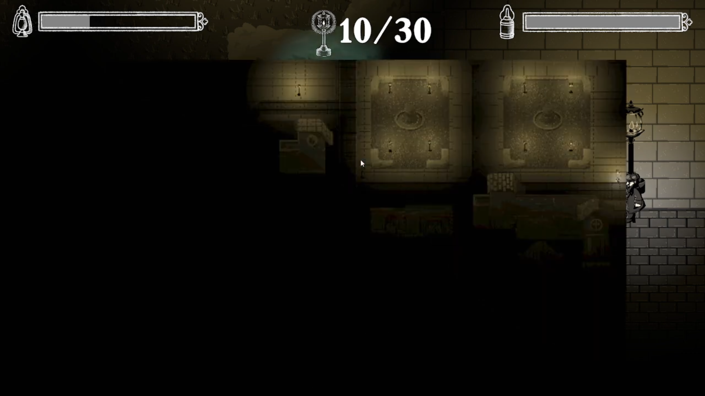
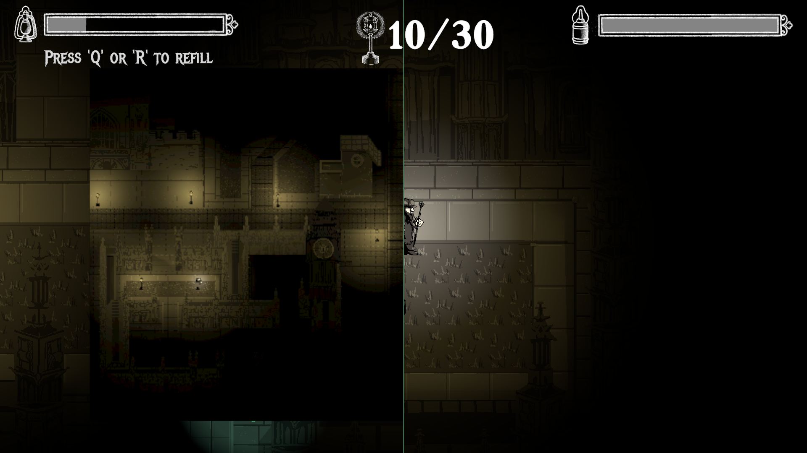

Project Overview
This game was originally created for the 2023 Spooky 2D Jam hosted over 48 hours From October 20th-22nd, with the Theme "Darkness". The original mechanical conceit for the game was for the player to explore a dark environment and find spots of light to act as safety. The flavor and aesthetic of the game was drawn from victorian era lamplighters. As the player explores looking for lamps, they are given a lantern with a continually decreasing light level. They can replenish this lantern with limited reserves of oil, which can also be refilled by finding collectible oil cans across the map. As they explore, they also encounter ghosts, which will pursue the player unless they are safe in the light of one of the lamps.
This was the first Game Jam game that I was able to bring to full completion. Previously, my final projects would lack core features or had fundamental design flaws. However, for this particular game jam I'd had the foresight to scope the game more appropriately, and enough experience under my belt to manage the project effectively enough that it had been mostly complete at the end of the jam. There had been a few missing features and polish, but they were minimal enough that I was able to finish it independently within a week. I reuploaded a full version of the game (version 1.0) on Halloween night. After this release, I received further feedback from my friends and other playtesters, which allowed me to hone in on a few design issues with the game. I went on to revisit these issues and released the final and current version of LampLighter at the start of December 2023.
Finding the last few lamps often took more time than was alloted to the player, as they had to explore the entirety of a rather large map with little direction
The map shows the full size of the level, but leaves unexplored portions still shrouded in darkness. It also does not stop time, discouraging overusage.
The map shows slightly more of the level through brighter lights not visible through the player's usual viewport.
Journal Entry: Map Mechanic Design
After I released version 1.0, a common issue I was noticing players were facing was that they were struggling to explore the full map with the time provided. The game had a max timer of 10 minutes (less if they fully ran out of oil), and the win condition was to locate all 30 lamps. This was a bit excessive, especially given the likelihood that a player could easily miss one lamp early on, and be left with no real way to identify where they have to backtrack to.
This was an interesting design issue to address, as I wanted to find a way to resolve it without trivializing the game's exploration - a core pillar of the gameplay. An initial idea I had was some effect that would guide the players to the nearest lamp. I considered implementing this as a subtle particle effect that would grow more prominent as the player activated more lamps. However, I decided against this as it would have too heavily guided the player and thus trivialized exploration as soon as they understood the mechanic.
While the map also made exploration easier, I took care to ensure it worked alongside the exploration, rather than fully eclipsing it. Most crucially, the map does not pause time. This was to add weight to its usage, preventing players from relying on it too heavily, lest they use too much oil or become caught by a ghost. Leaving the player vulnerable when looking at the map the map also incentivized using it only when in the light of a lamp. This emphasized the role of the lamps as a rare source of safety, in line with the horror-inspired atmosphere of the game. I also made it so that the map only unlocked after a certain number of lamps (10/30) so that they would have to engage with the exploration independently before using it
The visual presentation of the map also helped balance itss relationship to the exploration. One of the earliest decisions I made about the map was to have it only show areas already lit up by lamps. This prevented the player from learning anything about the level preemptively, and ensured that it only served as a reminder of progress already made. Moreover, by giving the lamps a set of lights that were wider, but only visible to the camera used to render the map, The player was better able to see more of the . I realized it was unfortunate how the dark atmosphere of our game limited how much of her work could be represented, so I was very grateful for this workaround to allow us to show it off.